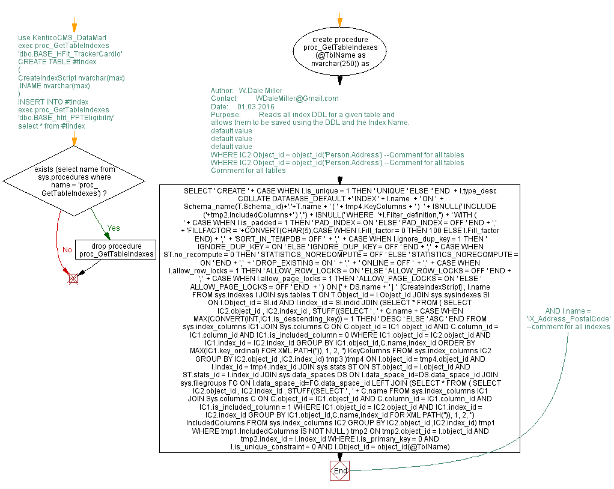

<a href="proc_GetTableIndexes.png"></a>
-- use KenticoCMS_DataMart --exec proc_GetTableIndexes 'dbo.BASE_HFit_TrackerCardio' /* CREATE TABLE #tIndex ( CreateIndexScript nvarchar(max) ,INAME nvarchar(max) ) INSERT INTO #tIndex exec proc_GetTableIndexes 'dbo.BASE_hfit_PPTEligibility' select * from #tIndex */ if exists (select name from sys.procedures where name = 'proc_GetTableIndexes') drop procedure proc_GetTableIndexes go create procedure proc_GetTableIndexes (@TblName as nvarchar(250)) as begin /* Author: W.Dale Miller Contact: WDaleMiller@Gmail.com Date: 01.03.2016 Purpose: Reads all index DDL for a given table and allows them to be saved using the DDL and the Index Name. */ SELECT ' CREATE ' + CASE WHEN I.is_unique = 1 THEN ' UNIQUE ' ELSE '' END + I.type_desc COLLATE DATABASE_DEFAULT +' INDEX ' + I.name + ' ON ' + Schema_name(T.Schema_id)+'.'+T.name + ' ( ' + tmp4.KeyColumns + ' ) ' + ISNULL(' INCLUDE ('+tmp2.IncludedColumns+' ) ','') + ISNULL(' WHERE '+I.Filter_definition,'') + ' WITH ( ' + CASE WHEN I.is_padded = 1 THEN ' PAD_INDEX = ON ' ELSE ' PAD_INDEX = OFF ' END + ',' + 'FILLFACTOR = '+CONVERT(CHAR(5),CASE WHEN I.Fill_factor = 0 THEN 100 ELSE I.Fill_factor END) + ',' + -- default value 'SORT_IN_TEMPDB = OFF ' + ',' + CASE WHEN I.ignore_dup_key = 1 THEN ' IGNORE_DUP_KEY = ON ' ELSE ' IGNORE_DUP_KEY = OFF ' END + ',' + CASE WHEN ST.no_recompute = 0 THEN ' STATISTICS_NORECOMPUTE = OFF ' ELSE ' STATISTICS_NORECOMPUTE = ON ' END + ',' + -- default value ' DROP_EXISTING = ON ' + ',' + -- default value ' ONLINE = OFF ' + ',' + CASE WHEN I.allow_row_locks = 1 THEN ' ALLOW_ROW_LOCKS = ON ' ELSE ' ALLOW_ROW_LOCKS = OFF ' END + ',' + CASE WHEN I.allow_page_locks = 1 THEN ' ALLOW_PAGE_LOCKS = ON ' ELSE ' ALLOW_PAGE_LOCKS = OFF ' END + ' ) ON [' + DS.name + ' ] ' [CreateIndexScript] , I.name FROM sys.indexes I JOIN sys.tables T ON T.Object_id = I.Object_id JOIN sys.sysindexes SI ON I.Object_id = SI.id AND I.index_id = SI.indid JOIN (SELECT * FROM ( SELECT IC2.object_id , IC2.index_id , STUFF((SELECT ' , ' + C.name + CASE WHEN MAX(CONVERT(INT,IC1.is_descending_key)) = 1 THEN ' DESC ' ELSE ' ASC ' END FROM sys.index_columns IC1 JOIN Sys.columns C ON C.object_id = IC1.object_id AND C.column_id = IC1.column_id AND IC1.is_included_column = 0 WHERE IC1.object_id = IC2.object_id AND IC1.index_id = IC2.index_id GROUP BY IC1.object_id,C.name,index_id ORDER BY MAX(IC1.key_ordinal) FOR XML PATH('')), 1, 2, '') KeyColumns FROM sys.index_columns IC2 --WHERE IC2.Object_id = object_id('Person.Address') --Comment for all tables GROUP BY IC2.object_id ,IC2.index_id) tmp3 )tmp4 ON I.object_id = tmp4.object_id AND I.Index_id = tmp4.index_id JOIN sys.stats ST ON ST.object_id = I.object_id AND ST.stats_id = I.index_id JOIN sys.data_spaces DS ON I.data_space_id=DS.data_space_id JOIN sys.filegroups FG ON I.data_space_id=FG.data_space_id LEFT JOIN (SELECT * FROM ( SELECT IC2.object_id , IC2.index_id , STUFF((SELECT ' , ' + C.name FROM sys.index_columns IC1 JOIN Sys.columns C ON C.object_id = IC1.object_id AND C.column_id = IC1.column_id AND IC1.is_included_column = 1 WHERE IC1.object_id = IC2.object_id AND IC1.index_id = IC2.index_id GROUP BY IC1.object_id,C.name,index_id FOR XML PATH('')), 1, 2, '') IncludedColumns FROM sys.index_columns IC2 --WHERE IC2.Object_id = object_id('Person.Address') --Comment for all tables GROUP BY IC2.object_id ,IC2.index_id) tmp1 WHERE tmp1.IncludedColumns IS NOT NULL ) tmp2 ON tmp2.object_id = I.object_id AND tmp2.index_id = I.index_id WHERE I.is_primary_key = 0 AND I.is_unique_constraint = 0 AND I.Object_id = object_id(@TblName) --Comment for all tables --AND I.name = 'IX_Address_PostalCode' --comment for all indexes end
Hide code
Visustin flow chart for T-SQL